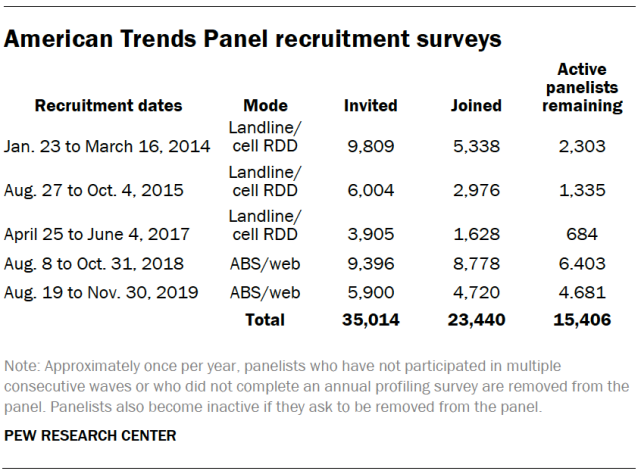

The research essay was a different kind of challenge from both the Writing Language and Literacy Narrative and
the Rhetorical Analysis Essay. Unlike the WLLN, writing about my own experiences and using that as evidence
was simply not enough. It wasn’t enough to only analyze one source either. With the research essay, I had to
learn how to best utilize the writings of multiple experts and writers to best support my argument. One of the
most difficult parts of writing this essay was solidifying my thesis. I knew what the topic of my essay was
going to be, which is xenophobia in America. But, of course, that is a very broad topic. So I had to spend
quite a lot of time figuring out my thesis, which ended up consisting of four major claims. Initially, I
started by finding my sources and synthesizing them. Once I had a lot of synthesis, I was able to successfully
identify a clear thesis.
For my research essay, I decided to tailor it to a general audience. As I was developing my thesis and
synthesizing the many sources, I realized that I wanted to focus on educating the general public, as
xenophobia is an issue that is affecting hundreds of millions of Americans all over the country. I want the
readers to realize how rooted it is in the culture and politics of American society. Until working on this
essay, I myself knew little of Edward Said’s “Orientalism.” It is something I want to now further explore in
future research essays and projects. I hope my audience is able to, at least, began to have a clearer picture
of the role of xenophobia in American society. I don’t expect my readers to fully change their mindsets by
reading one essay, but I hope that my readers began to reflect on their own implicit bias and xenophobia.
In working on this essay, some meaningful insights I have gained is the importance of being able to synthesize
sources and having the ability to connect these sources to a larger thesis. Learning to actually analyze and
connect sources together, instead of simply summarizing, is another meaningful skill I picked up during this
phase. Evidence and argument are the concepts that most impacted my learning and writing practices. In this
phase, I had to learn how to utilize evidence to most effectively support my thesis and argument. I had to
learn how to use sources to build up my argument. In addition, I had to learn how to successfully present my
argument without coming off as aggressive to the readers.
This phase’s assignment helped me achieve the following Course Learning Outcomes: “Locate research sources
(including academic journal articles, magazine and newspaper articles) in the library’s databases or archives
and on the Internet and evaluate them for credibility, accuracy, timeliness, and bias”; “compose texts that
integrate your stance with appropriate sources using strategies such as summary, critical analysis,
interpretation, synthesis, and argumentation; practice systematic application of citation conventions.” I
learned how to effectively search for sources on the topic of xenophobia in America. For instance, I had to
test out different phases and terms in Google (with additional arguments such as quotes) to get the articles
more relevant to my topic. Moreover, I had to learn to synthesize my sources more, so that they flowed better
and supported my larger argument. Last, but not least, I had to properly cite the articles I used as well as
the book and video I embedded in my essay. Overall, though it was a tough writing challenge, the research
essay was a great learning experience.
Second Draft
In March 2020, when Covid-19 began to rapidly spread in the United States, xenophobia against Asian Americans
began to escalate. From the SARs outbreak in 2002 to the Ebola virus in 2014, one group or another has been
targeted. What is at the root of this problem? Human rights lawyer, and activist Láolú Senbanjo, in his
opinion piece, “A Virus Doesn’t Care Where You’re From,” published in The New York Times, addresses this issue
and supplies prior examples of xenophobia’s connection to viruses and diseases. He asserts that disease simply
causes harm to the human body, not the Chinese body, or African body. Senbanjo emphasizes the importance of
“human body” in his article in order to highlight that disease doesn’t have any connection to a certain
ethnicity or origin. Though many naturally tend to assign blame for a disease or virus to some group, diseases
and viruses do not discriminate. In order to deal with uncertainty, people find a group to blame in order to
feel some sense of control and assurance. Though xenophobia has always existed throughout American history, it
has dramatically increased during Trump’s presidency and the current pandemic.
The response to Covid-19 is not the first time that xenophobia rose due to a major virus or disease. For
example, the Ebola virus of 2014 caused a lot of xenophobia against Americans of African descent. In
“Ebola,
race, and fear,” a BBC piece on the response to Ebola, Anthony Zurcher, a senior writer with BBC and
editor of
Echo Chambers, addresses the hostile reaction against African Americans after the rise in Ebola. Zurcher
adds
on to Senbanjo’s claims, and talks of the Ebola hysteria in the U.S., citing multiple instances where
perceived ideas of both race and this virus targeted individuals. For instance, he points to a specific
example of two students from Rwanda being sent home from a New Jersey elementary school for twenty-one
days.
Zurcher expands on the ideas, which Senbanjo illustrated in his writing, of racism’s connection to this
hysteria. He incorporates the following quote from The Guardian's Hannah Giorgis: “Ebola now functions
in
popular discourse as a not-so-subtle, almost completely rhetorical stand-in for any combination of
‘African-ness’, ‘blackness’, ‘foreign-ness...’” This powerful quote depicts that Westerners view disease
as
being a “foreign” threat that causes harm to Western bodies. Similar to Senbanjo, Zurcher puts an
emphasis
on
the idea that there’s just the human body, not the African body nor the Chinese body. Furthermore,
Edward
Said’s 1978 book, “Orientalism” explores the need of the West to view “foreigners” as the “other,” as
“less
than.” In “‘Orientalism,’ Then and Now,” Adam Shatz, contributing editor at the London Review of Books,
explores how the West views the Arab-Islamic world. Shatz explains that in “Orientalism,” Said
demonstrates
that the West looks down upon the East, especially Asian and Arab countries, and sees the people as
uncivilized. “Orientalism” reveals where the hatred against foreigners is entrenched. The video to the
right,
called “Orientalism explained,” delves more into how the White man, represented by the West, views the
East as
“violent” and “monstrous,” among other negative portrayals. The West sees the East as “inferior” and
considers
itself “superior.” A perfect example of this would be Trump’s Muslim ban or even the movie “Aladdin.”
Thus,
orientalism can be found in all aspects of Western society.
Extending on the idea that disease doesn’t discriminate, in the text, “Trump’s immigration ban is another page
in the long story of xenophobia in America,” Laura Smith, a professor in history at Canterbury Christ Church
University, suggests that America has a very, very long history of xenophobia and asserts that Trump’s intent
to ban all immigration in response to Covid-19 is the most appalling instance of his xenophobia. Smith mainly
focuses on the history of xenophobia and the influence and harm that the words of a leader can have on
immigrant communities. What leaders announce to millions of people matter. While Senbanjo addresses the issue
of xenophobia in response to some disease or virus, Smith delves more into a deeper problem that America has
always had from the beginning of its founding. For example, she specifically examines the earlier history of
xenophobia in America and the Know-Nothing Party, which was a party that was heavily anti-Catholic and
anti-immigrant. Though Senbanjo doesn’t explicitly call out a certain leader, Smith specifically scrutinizes
the effects of Trump’s America First initiative and his own history of racism and xenophobia. Though Smith
doesn’t explicitly state this, it is important to emphasize that Americans often scapegoat groups that seem
“foreign” and less “white.” The problem of scapegoating is not a new one for America. It has always been a
problem rooted at the core of the country. Whenever times get tough or scary, Americans find a group to blame,
a group to see as the “other.” Thus, the response to Covid-19 in terms of xenophobia is not a shocking one.
Whether it’s the billions of Muslims of the world or people from entire countries, America finds someone to
blame.
Unlike Smith’s article, Jennifer Rubin, opinion columnist of The Washington Post covering politics and policy,
foreign and domestic, is drastically more optimistic in her piece, “Trump’s racism and xenophobia haven’t
caught on,” (2020). She asserts that Trump did not make the country more racist or xenophobic, and suggests
that his presidency actually caused Americans to become more aware of their own racism and xenophobia. While
Smith implies that Trump’s specific actions and words have caused the country to become more xenophobic, Rubin
challenges this claim and proves the opposite. Through the use of multitude of statistics, she illustrates
that the country as a whole has become more welcoming and kinder to immigrants and communities of color. Rubin
affirms that according to a Pew poll, “‘An increasing share of registered voters — Trump and Biden supporters
alike — say the growing number of newcomers to the country strengthens American society.” While four years ago
50% of Americans thought immigrants were a threat, only 37% agreed with this sentiment in the recent poll.
However, it is noteworthy to point out that polls can be misleading, and that people can be easily
underrepresented or overrepresented. Though it is understandable that Rubin wants to emphasize the good that
may have come out of Trump’s presidency, she fails to acknowledge the damage that Trump has done. Though his
election did wake up more White liberals, it still ignited a lot of hate against immigrant communities and
communities of color. His words made the secret racists feel powerful and feel that they could treat other
humans, who they see as “foreign” or “different,” to put it bluntly, like trash. Xenophobia has undoubtedly
worsened in the past couple of years. The actions and words of our leader have had an unimaginable and
calamitous impact.
In the article, “Trump’s coronavirus speech was laced with xenophobia,” Laura McGann, editorial director of
Vox.com, tackles what Rubin avoids in her essay. She examines how Trump, from the beginning of his campaign,
has utilized our differences to divide the country. He uses fear to divide the country. Rather than bringing
the country together during a world pandemic, a rather grim and tough situation, our supposed leader uses hate
speech to hurt immigrant communities and communities of color, and to advance his own agenda. McGann indicates
that by banning immigration in America, no good was being done to actually stop Covid-19 from spreading in the
U.S. It was already here in March of 2020, and blaming and attacking any single group of people wasn’t going
to resolve it or stop it. By claiming Covid-19 to be a “Chinese virus,” Trump unquestionably had a role in the
rise of xenophobia, especially against Asian Americans.
It’s not that Trump has a problem with immigration. He just has a problem with immigration from countries that
are not like Norway. Or in other words, he doesn’t like immigration from countries that are not majority
white. In “‘A New Low.’ The World Is Furious at Trump for His Remark About ‘Sh**hole Countries,’” an article
published in TIME, Laignee Baron, staff editor at TIME, addresses Trump’s racist remark in response to a
bipartisan immigration deal in 2018. She examines the international outcry in response to his question, “Why
are we having all these people from sh**hole countries come here?” Not only did he refer to Haiti, El
Salvador, and parts of Africa by such an appalling adjective, but he also seemed to suggest that America
should only allow immigration from countries such as Norway. In saying this, of course, he meant America
should only allow immigration from countries that are overwhelming white. This was one of many instances in
which Trump showed his true colors. Similar to Smith, Baron emphasizes the impact that Trump himself has had
in the rise of xenophobia in the U.S. It’s not that Trump invented racism or xenophobia, or that now that
Biden has been elected President, it will all disappear. It’s that racism and xenophobia is rooted at the
founding of America. Trump might not have created these problems, but he sure did fuel the anger and fear in
Americans all over this country. He used fear and hate to divide the country and to benefit himself. Trump
gave voice to those who see and treat immigrants as the “other,” as anything but “American.”
It’s no secret that America, at its roots, is inherently xenophobic. It has existed from the country’s
founding. Americans have had a tendency to scapegoat groups of people all throughout its history. In
particular, people have a habit of scapegoating people during tough times, such as the current pandemic.
“Othering” is a tool that has been used throughout time to feel a sense of superiority, certainty, and
control. In the 2010s, America seemed to be progressing greatly in terms of its attitudes and treatment toward
immigrants and communities of color. However, when Donald Trump was elected in 2016, Americans came to the
realization that it was not nearly as progressive as it had touted to the rest of the world. From Trump’s
election to the White House to now, toward the end of his presidency, there has been a clear trend of the rise
in xenophobia in this country. Trump played on the anger and resentment towards immigrants that has existed
for a long time. In fact, that is how he came to win in 2016. Despite this, though many may feel that
xenophobia will disappear now that he has lost the 2020 election, we must continue to hold our leaders
accountable and educate each other about the deeply rooted problem of xenophobia in America.
Edward Said’s 1978 book, “Orientalism” explores the need of the Western world to look down upon the
East,
especially Asian and Arab countries. “Orientalism” delves into how the White man, represented by the
West,
views the East as “violent” and “monstrous,” among other negative portrayals. While the West sees the
East as
“inferior,” it considers itself “superior.” In March 2020, when Covid-19 began to rapidly spread in the
United
States, xenophobia against Asian Americans began to escalate. From the SARs outbreak in 2002 to the
Ebola
virus in 2014, one group or another has been targeted. What is at the root of this problem? Human rights
lawyer, and activist Láolú Senbanjo, in his opinion piece, “A Virus Doesn’t Care Where You’re From,”
(2020)
published in The New York Times, addresses this issue and supplies prior examples of xenophobia’s
connection
to viruses and diseases. He asserts that disease simply targets every human body equally, rather than a
specific, ethnic body like the Chinese or African body. Senbanjo emphasizes the importance of “human
body” in
his article in order to highlight that disease doesn’t have any connection to a certain ethnicity or
origin.
Though many naturally tend to assign blame for a disease or virus to some group, diseases and viruses do
not
discriminate. In order to deal with uncertainty, people find a group to blame in order to feel some
sense of
control and assurance. The reasoning behind this is even deeper, and as Said’s theory points out, it is
connected to the West’s harmful view of the East as “barbaric” and “primitive.” Though xenophobia has
always
existed throughout American history, it has dramatically increased during Trump’s presidency and the
current
pandemic. The powerful leaders, such as Trump, of the world have to be held accountable for their
actions and
words. Otherwise, in the process, millions of people could be targeted.
Extending on the idea that disease doesn’t discriminate, in the text, “Trump’s Immigration Ban is Another Page
in the Long Story of Xenophobia in America,” (2020) Laura Smith, a professor in history at Canterbury Christ
Church University, suggests that America has a very, very long history of xenophobia and asserts that Trump’s
intent to ban all immigration in response to Covid-19 is the most appalling instance of his xenophobia. Smith
mainly focuses on the history of xenophobia and the influence and harm that the words of a leader can have on
immigrant communities. What leaders announce to millions of people matter. Although some may argue Trump did
this to prevent the disease from spreading, it is important to note that at this point, banning immigration
wasn’t going to prevent a disease that had already spreading in the U.S. While Senbanjo addresses the issue of
xenophobia in response to some disease or virus, Smith delves more into a deeper problem that America has
always had from the beginning of its founding. For example, she specifically examines the earlier history of
xenophobia in America and the Know-Nothing Party, which was a party that was heavily anti-Catholic and
anti-immigrant. Though Senbanjo doesn’t explicitly call out a certain leader, Smith specifically scrutinizes
the effects of Trump’s America First initiative and his own history of racism and xenophobia. It is important
to emphasize that Americans often scapegoat groups that seem “foreign” and less “white.” The problem of
scapegoating is not a new one for America. It has always been a problem rooted at the core of the country.
Whenever times get tough or scary, Americans find a group to blame, a group to see as the “other.” Thus, the
response to Covid-19 in terms of xenophobia is not a shocking one.

Unlike Smith’s article, Jennifer Rubin, opinion columnist of The Washington Post covering politics and
policy,
foreign and domestic, is drastically more optimistic in her piece, “Trump’s Racism and Xenophobia
Haven’t
Caught On,” (2020). She asserts that Trump did not make the country more racist or xenophobic, and
suggests
that his presidency actually caused Americans to become more aware of their own racism and xenophobia.
While
Smith implies that Trump’s specific actions and words have caused the country to become more xenophobic,
Rubin
challenges this claim and proves the opposite. Through the use of multitude of statistics, she
illustrates
that the country as a whole has become more welcoming and kinder to immigrants and communities of color.
Rubin
affirms that according to a Pew poll (2014 - 2017), “‘An increasing share of registered voters — Trump
and
Biden supporters alike — say the growing number of newcomers to the country strengthens American
society.”
While four years ago 50% of Americans thought immigrants were a threat, only 37% agreed with this
sentiment in
the recent poll. However, it is noteworthy to point out that polls can be misleading, and that people
can be
easily underrepresented or overrepresented. As you can see in the table of American Trends Panel
recruitment
surveys, only 23,440 actually joined this panel. Over three-hundred million live in America, and this
small
portion of the population is not enough to prove that America as whole has become more welcoming during
Trump’s presidency. Furthermore, registered voters does not include the millions of immigrants in this
country
who aren’t able to vote. Another aspect of this poll that should be called into question is the actual
demographic of the poll. It is noteworthy that the Pew poll was given mostly online, so older voters
were less
likely to complete the poll. The poll simply is not enough to showcase America’s newfound acceptance of
immigrants and communities of color. In addition, racism doesn’t always have to be explicit. It is
something
is deeply rooted in our society. Though it is understandable that Rubin wants to emphasize the good that
may
have come out of Trump’s presidency, she fails to acknowledge the damage that Trump has done. Though his
election did wake up more White liberals, it still ignited a lot of hate against immigrant communities
and
communities of color. His words made the secret racists feel powerful and feel that they could treat
other
humans, who they see as “foreign” or “different,” to put it bluntly, poorly. Xenophobia has undoubtedly
worsened in the past couple of years. The actions and words of our leader have had an unimaginable and
calamitous impact.
In “‘A New Low.’ The World Is Furious at Trump for His Remark About ‘Sh**hole Countries,’” (2018) an article
published in TIME, Laignee Baron, staff editor at TIME, addresses Trump’s racist remark in response to a
bipartisan immigration deal in 2018. She examines the international outcry in response to his question, “Why
Are We Having All These People from Sh**hole Countries Come Here?” Not only did he refer to Haiti, El
Salavador, and parts of Africa by such an appalling adjective, but he also seemed to suggest that America
should only allow immigration from countries such as Norway. In saying this, of course, he meant America
should only allow immigration from countries that are overwhelming white. This was one of many instances in
which Trump showed his true colors. Similar to Smith, Baron emphasizes the impact that Trump himself has had
in the rise of xenophobia in the U.S. It’s not that Trump invented racism or xenophobia, or that now that
Biden has been elected President, it will all disappear. It’s that racism and xenophobia is rooted at the
founding of America. Trump might not have created these problems, but he sure did fuel the anger and fear in
Americans all over this country. He used fear and hate to divide the country and to benefit himself. Trump
gave voice to those who see and treat immigrants as the “other,” as anything but “American.”
The response to Covid-19 is not the first time that xenophobia rose due to a major virus or disease. For
example, the Ebola virus of 2014 caused a lot of xenophobia against Americans of African descent. In “Ebola,
Race, and Fear,” (2014) a BBC piece on the response to Ebola, Anthony Zurcher, a senior writer with BBC and
editor of Echo Chambers, addresses the hostile reaction against African Americans after the rise in Ebola. He
cites multiple instances where perceived ideas of both race and this virus targeted individuals. For instance,
he points to a specific example of two students from Rwanda being sent home from a New Jersey elementary
school for twenty-one days. Zurcher expands on the ideas, which Senbanjo illustrated in his writing, of
racism’s connection to this hysteria. He incorporates the following quote from The Guardian's Hannah Giorgis:
“Ebola now functions in popular discourse as a not-so-subtle, almost completely rhetorical stand-in for any
combination of ‘African-ness’, ‘blackness’, ‘foreign-ness...’” This powerful quote depicts that Westerners
view disease as being a “foreign” threat that causes harm to Western bodies. Similar to Senbanjo, Zurcher puts
an emphasis on the idea that there’s just the human body, not the African body nor the Chinese body.
In the article, “Trump’s Coronavirus Speech Was Laced with Xenophobia,” Laura McGann, editorial director of
Vox.com, tackles what Rubin avoids in her essay. She examines how Trump, from the beginning of his campaign,
has utilized our differences to divide the country. Rather than bringing the country together during a world
pandemic, a rather grim and tough situation, our supposed leader uses hate speech to hurt immigrant
communities and communities of color, and to advance his own agenda. McGann indicates that by banning
immigration in America, no good was being done to actually stop Covid-19 from spreading in the U.S. It was
already here in March of 2020, and blaming and attacking any single group of people wasn’t going to resolve it
or stop it. By claiming Covid-19 to be a “Chinese virus,” Trump unquestionably had a role in the rise of
xenophobia, especially against Asian Americans.
It’s no secret that America, at its roots, is inherently xenophobic. It has existed from the country’s
founding. Americans have had a tendency to scapegoat groups of people all throughout its history. In
particular, people have a habit of scapegoating people during tough times, such as the current pandemic.
“Othering” is a tool that has been used throughout time to make the Western world feel a sense of superiority,
certainty, and control. In the 2010s, America seemed to be progressing greatly in terms of its attitudes and
treatment toward immigrants and communities of color. However, when Donald Trump was elected in 2016,
Americans came to the realization that it was not nearly as progressive as it had touted to the rest of the
world. From Trump’s election to the White House to now, toward the end of his presidency, there has been a
clear trend of the rise in xenophobia in this country. Trump played on the anger and resentment towards
immigrants that has existed for a long time. In fact, that is how he came to win in 2016. Despite this, though
many may feel that xenophobia will disappear now that he has lost the 2020 election, we must continue to hold
our leaders accountable and educate each other about the deeply rooted problem of xenophobia in America.